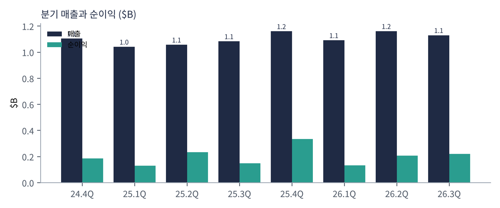
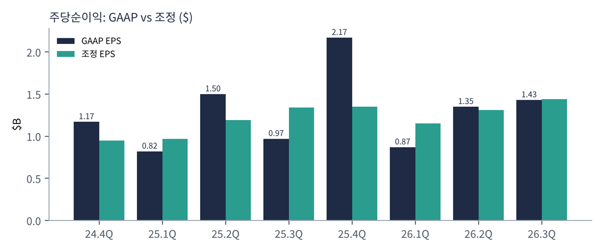
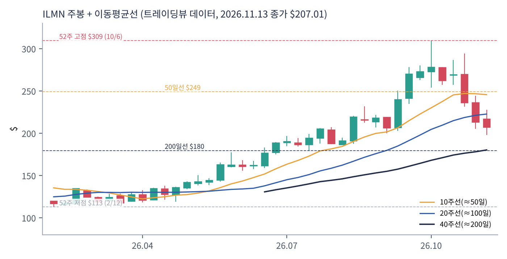
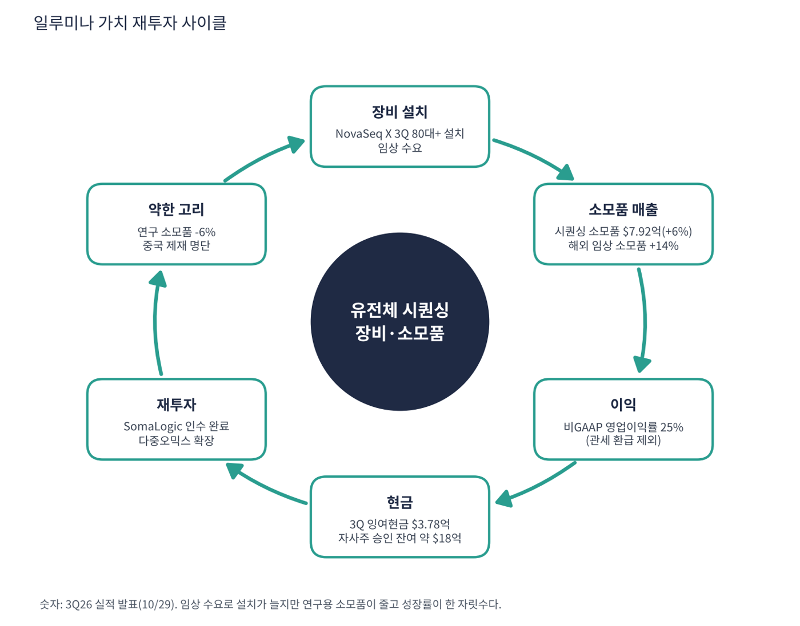

일루미나는 DNA 시퀀싱(염기서열 분석) 장비와 소모품 시장의 선두 업체다. 장비(NovaSeq X 등)를 설치하면 시약·칩 같은 소모품이 반복 매출로 이어지는 구조다. 3분기 매출은 $11.3억(+4%)으로 성장률은 한 자릿수지만 비GAAP 영업이익률 25%, 잉여현금 $3.78억으로 수익성이 좋고 가이던스를 올렸다. 다만 조정 PER이 39배라 성장 대비 비싼 회사다.
| 항목 | 내용 |
|---|---|
| 종목 | Illumina, Inc. (ILMN) · NASDAQ · 유전체 분석 장비·소모품 · 본사 미국 캘리포니아주 샌디에이고 |
| 시가총액 | 약 $313억 · PER 35.6배(GAAP TTM), 조정 39.4배 · P/S 7.1배 (11/13 종가 $207.01) |
| 최근 분기(3Q26) | 매출 $11.29억(+4.2%, 관세 환급 제외 $11.66억), GAAP 영업이익률 27.0%, 순이익 $2.20억 |
| EPS(3Q) | GAAP $1.43(전년 $0.98), 비GAAP $1.44(관세 환급 제외, 전년 $1.34, +7%) |
| 매출 구성 | 시퀀싱 소모품 $7.92억(+6%), 서비스·기타 $1.58억(+8%, 유기적), 장비 약 $1.79억(내 계산) |
| 현금·부채 | 현금 $13.4억, 총차입금 약 $23억, 3Q 잉여현금 $3.78억(전년 $2.53억), TTM EBITDA 약 $12억, TTM 잉여현금 약 $11억 |
| 가이던스(2026) | 매출 $46.4~46.6억(기존 $46.0~46.4억) · 비GAAP EPS $5.40~5.45(기존 $5.30~5.40) · 비GAAP 영업이익률 23.6% · 4Q 매출 $12.2~12.4억, EPS $1.51~1.56 |
| 다음 실적 | 4Q26 실적: 2027년 2월 11일 예정(트레이딩뷰). 2027 가이던스는 4Q 실적에서 제시 |
| 직책 | 인물 | 역할·특징 |
|---|---|---|
| CEO | 제이콥 타이센 | 임상 수요와 NovaSeq X 설치가 3Q 실적을 이끌었다고 설명, 가이던스 상향 발표 |
| CFO | 안쿠르 딩그라 | 관세 환급 효과를 제외한 수치로 실적과 가이던스 설명, 자사주 매입 계획 안내 |
경영 스타일: '지출을 절제하며 임상 시장에서 소모품 매출을 키운다'. 3Q에 NovaSeq X를 80대 이상 설치했고 해외 임상 소모품은 +14%였지만 연구·응용 소모품은 -6%였다. 중국은 중국 정부의 '신뢰할 수 없는 기업 명단'에 올라 있으나 3Q에 전년 대비 성장으로 돌아섰다고 밝혔다.
NovaSeq X 장비를 깔고 시약·칩 소모품으로 반복 매출을 올린다. 3Q 소모품 매출은 $7.92억으로 전체의 약 70%다.
연구용에서 임상 진단으로 수요를 넓히고, SomaLogic(단백질 분석) 인수로 다중오믹스를 갖췄다. 2024년 GRAIL 관련 손상이 있었다.
| 분기 | 매출 | 순이익 | EPS | 조정 EPS | 특이 사항 |
|---|---|---|---|---|---|
| 2024.4Q | $11.0억 | $1.9억 | 1.17 | 0.95 | |
| 2025.1Q | $10.4억 | $1.3억 | 0.82 | 0.97 | |
| 2025.2Q | $10.6억 | $2.4억 | 1.50 | 1.19 | |
| 2025.3Q | $10.8억 | $1.5억 | 0.97 | 1.34 | |
| 2025.4Q | $11.6억 | $3.3억 | 2.17 | 1.35 | GAAP이 조정보다 높음(원인 미확인) |
| 2026.1Q | $10.9억 | $1.3억 | 0.87 | 1.15 | |
| 2026.2Q | $11.6억 | $2.1억 | 1.35 | 1.31 | |
| 2026.3Q | $11.3억 | $2.2억 | 1.43 | 1.44 | 관세 환급 효과 포함(조정은 환급 제외) |


조정 EPS는 트레이딩뷰 'Reported'(비GAAP 희석 EPS) 값이다. 3Q26 조정 $1.44는 관세 환급 효과를 제외한 값이다(환급 포함 시 $1.62). GAAP EPS는 스캐너 값이고 3Q25·3Q26은 회사 발표와 일치한다(3Q25 회사 발표 $0.98, 스캐너 $0.97).
흐름 요약: 분기 매출은 $10.4~11.6억으로 정체에 가깝다. 조정 EPS는 $0.95(4Q24)에서 $1.44(3Q26)로 늘었다. 4Q25 GAAP 순이익 $3.34억과 EPS $2.17은 조정보다 높은데 원인은 확인하지 못했다. 영업이익과 분기 설비투자의 8분기 값은 구하지 못해 표에서 뺐다(3Q 설비투자는 $0.41억).
| 구분 | 3Q26 | 비고 |
|---|---|---|
| 시퀀싱 소모품 | $7.92억(약 70%) | +6%, 유기적 +5%. 해외 임상 +14%, 연구·응용 -6% |
| 서비스·기타 | $1.58억(약 14%) | +8%(유기적) |
| 장비 | 약 $1.79억(약 16%) | 총매출 − 소모품 − 서비스(내 계산). NovaSeq X 80대 이상 설치 |
| 총매출 | $11.29억 | +4.2%(관세 환급 제외 $11.66억) |
소모품이 매출의 70%라 설치된 장비 수와 사용량이 핵심이다. 연구용 수요가 줄고 임상용이 늘어나는 구조 전환 중이다. 금액 일부는 내 계산이다.
일루미나의 방향은 '임상 시퀀싱과 다중오믹스로 소모품 매출을 키우며 수익성을 높이는 것'이다.
| 축 | 최근 움직임 |
|---|---|
| 가이던스 | 2026 매출·EPS·영업이익률 모두 상향, 2027은 4Q 실적 때 제시 |
| 임상 수요 | 해외 임상 소모품 +14%, NovaSeq X 80대 이상 설치 |
| 중국 | 신뢰할 수 없는 기업 명단에 있으나 3Q 성장 복귀 |
| 주주환원 | 자사주 승인 잔여 약 $18억(3Q 매입 $0.09억) |

| 이동평균 | 값 | 종가 대비 | 해석 |
|---|---|---|---|
| 5일선 | $213.04 | -2.8% | 현재가가 아래 |
| 20일선 | $244.76 | -15.4% | 하향 |
| 50일선 | $249.02 | -16.9% | 20일선보다 위 |
| 100일선 | $223.19 | -7.2% | 현재가가 아래 |
| 200일선 | $179.52 | +15.3% | 현재가가 위 |
주봉 흐름: 2026년 2월 저점 $112.7(2/12) → 4~5월 $127~145 → 6~8월 $160~220 → 9월 급등 → 10/6 주 고점 $309 → 10/26 주 급락 → 11/2 주 저가 $205 → 11/9 주 저가 $197.8, 종가 $207.
| 규칙 | 기준 | 현재 값 | 신호 |
|---|---|---|---|
| 장기 추세 필터 | 종가 vs 200일선 | $207.01 > $179.52 | 매수 |
| 중장기 교차 | 50일선 vs 200일선 | $249.02 > $179.52 | 매수 |
| 단기 교차 | 20일선 vs 50일선 | $244.76 < $249.02 | 매도 |
| 돈키언 채널 | 55일 고가 $309.35 / 저가 $197.81 | 중간값 $253.58 아래 | 매도 |
| 1개월 모멘텀 | 21거래일 수익률 | -22.7% (기준 $267.93) | 매도 |
| 3개월 모멘텀 | 63거래일 수익률 | +7.2% (기준 $193.13) | 매수 |
| 6개월 모멘텀 | 126거래일 수익률 | +45.2% (기준 $142.54) | 매수 |
| 12개월 모멘텀 | 252거래일 수익률 | +69.7% (기준 $121.98) | 매수 |
| 종합 (8개 평균) | +0.25 | 매수 우위 |
해석: 8개 중 5개 매수, 3개 매도로 +0.25(매수 우위). 다만 주가가 20일선($244.8) 아래로 내려왔고 1개월 모멘텀과 돈키언 중간값은 이미 매도다. 3개월 모멘텀 기준선은 $193.1이다. 14일 ATR $17.11 (8.3%)로 변동이 크다(약 8%).
| 가격 | 무엇이 바뀌나 | 의미 |
|---|---|---|
| $193.1 이탈 | 3개월 모멘텀 | 매수 → 매도(점수 0.00으로 하락) |
| $179.5 이탈 | 200일선 | 장기 추세 필터 매수 → 매도 |
| $244.8 상향 돌파 | 20일선 | 단기 추세 회복 |
| $253.6 상향 돌파 | 돈키언 중간값 | 55일 채널 전환 |
| $267.9 상향 돌파 | 1개월 모멘텀 | 매도 → 매수 |
| 구분 | 가격대 | 근거 |
|---|---|---|
| 저항 1 | $213 | 5일선 |
| 저항 2 | $223 | 100일선 |
| 저항 3 | $245 ~ 249 | 20일선·50일선 |
| 지지 1 | $197.8 | 11/9 주 저가(55일 저점) |
| 지지 2 | $179.5 | 200일선 |
급락 뒤 200일선 위에 있어 지지 확인형 진입이 가능하다. $185~205에서 계획 비중의 30%만 진입하고 종가 $175(200일선 $179.5 아래) 이탈 시 손절한다. 1차 목표 $224(100일선), 2차 $245(20일선, 내 가정). 조정 PEG가 2.19로 높아 비중을 키우지 않는다.
| 악재 요인 | 내용 | 강도 |
|---|---|---|
| 밸류에이션 | 조정 PER 39배, 조정 PEG 2.19, 가이던스 성장 +12% | 중간~높음 |
| 성장 둔화 | 매출 +4%, 연구·응용 소모품 -6% | 중간 |
| 중국 | 신뢰할 수 없는 기업 명단, 3Q 성장 복귀했으나 불확실 | 중간 |
| 관세 환급 왜곡 | 3Q GAAP에 환급 효과 포함($0.79억 매출원가 감소) | 참고 |
| 변동성 | 10/6 고점 $309에서 -36%, ATR 가격의 8% | 중간 |
| 티커 | 회사 | 시가총액 | PER(TTM) | PEG | P/S | EPS 성장(YoY) |
|---|---|---|---|---|---|---|
| ILMN | 일루미나 | $31B | 39.4배 | 2.19 | 7.10배 | +18% |
| TMO | 써모 피셔 | $259B | 36.9배 | – | 5.48배 | +10% |
| DHR | 다나허 | $164B | 38.2배 | – | 6.41배 | +26% |
| TXG | 10x 지노믹스 | $8B | 적자 | – | 12.50배 | +17% |
ILMN의 PER·PEG·성장률은 조정 EPS 기준이고 나머지는 트레이딩뷰 GAAP TTM이다. TMO·DHR은 장비 대형주라 비교 폭이 넓다.
비교 결론: 조정 PER 39배는 TMO·DHR(37~38배)과 비슷하다. 성장률은 ILMN(+18%)이 TMO(+9.5%)보다 높지만 DHR(+25.7%)보다 낮다.
ILMN은 영업현금이 매우 크고 부채가 감당 가능한 수준이다. 현금 $13.4억, 총차입금 약 $23억으로 순부채는 약 $10억이고 TTM EBITDA $12억의 0.8배다.
| 지표 | 값 | 계산·출처 | 해석 |
|---|---|---|---|
| 현금·단기투자 | $13.4억 | 회사 발표 | 스캐너 약 $13억과 일치 |
| 총차입금 | 약 $23억 | 스캐너 | 순부채 약 $10억(내 계산) |
| TTM EBITDA | 약 $12억 | 스캐너 | 순부채/EBITDA 약 0.8배 |
| TTM 잉여현금흐름 | 약 $11억 | 스캐너 | 시총 대비 3.5% |
| 3Q 영업현금 / 설비투자 | $4.19억 / $0.41억 | 회사 발표 | 잉여현금 $3.78억 |
| 자사주 | 3Q $0.09억, 잔여 약 $18억 | 기사 인용 | 시총의 약 5.8% |
| 기준 | 값 | 비고 |
|---|---|---|
| P/S (스캐너) | 7.1배 | 트레이딩뷰 값 |
| P/S (내 계산) | 약 6.9배 | 시총 $313억 ÷ TTM 매출 $45.4억 |
| P/FCF (TTM) | 약 28배 | 시총 ÷ 잉여현금 $11억 |
| 동종 | TMO 5.5, DHR 6.4, TXG 12.5 | 11/13 스캐너 |
해석: 잉여현금 수익률이 3.5%로 낮지 않다. 스트레스 가정(2026 가이던스 중간 EPS $5.425·주식 1.51억 주 고정, 내 가정): PER 25배면 주가 약 $136(-34%), 30배면 $163(-21%), 35배면 $190(-8%)이다. 현재는 38.2배다.
| 지표 | 값 | 판정 |
|---|---|---|
| PER (GAAP TTM) | 35.6배 | TTM EPS $5.82 — 4Q25 GAAP $2.17 포함 |
| PER (조정 TTM) | 39.4배 | 최근 4분기 조정 EPS 합 $5.25 (내 계산) |
| PER (2026 가이던스 중간 $5.425) | 38.2배 | 내 계산 |
| EV / EBITDA (TTM) | 약 27배 | EV ≈ 시총 $313억 + 차입금 $23억 − 현금 $13억 = $323억, ÷ $12억 |
| 방식 | PER | EPS 성장률 | PEG | 판정 |
|---|---|---|---|---|
| 트레이딩뷰 (GAAP TTM) | 35.6배 | +30.4% | 약 1.17 | GAAP TTM에 4Q25 일회성 포함 · 내 계산(트레이딩뷰는 미제공) |
| 조정 EPS 기준 (TTM) | 39.4배 | +18.0% | 2.19 | 투자 적격 기준 1.0 초과 |
| 조정 TTM $5.25 ÷ 직전 TTM $4.45 | – | – | – | 직전: 4Q24 0.95 + 1Q25 0.97 + 2Q25 1.19 + 3Q25 1.34 |
| 2026 가이던스 중간 $5.425 ÷ 2025 조정 EPS $4.85 | 38.2배 | +11.9% | 약 3.2 | 내 계산 |
판정: 조정 PEG 2.19로 투자 적격(1.0 이하)이 아니다. GAAP 기준 PEG는 4Q25 일회성이 포함돼 좋아 보이지만 조정 EPS가 더 정확하다. 2026 가이던스 기준 성장은 +11.9%로 낮아 PEG는 3.2에 이른다. 가격이 성장 속도에 비해 높다는 신호다.

사이클은 장비 설치 → 소모품 매출 → 이익·현금 → 인수·자사주다. 연구용 수요 약세와 중국이 약한 고리다.
| 고리 | 현재 숫자 | 고리 강도 | 약해지는 신호 |
|---|---|---|---|
| ① 장비 설치 | NovaSeq X 80대+ 설치 | 강함 | 설치 둔화 |
| ② 소모품 | $7.92억(+6%), 해외 임상 +14% | 보통 | 연구용 감소 확대 |
| ③ 이익 | 비GAAP 영업이익률 25%(관세 환급 제외) | 강함 | 관세·원가 |
| ④ 현금 | 3Q 잉여현금 $3.78억, TTM $11억 | 강함 | 운전자본 |
| ⑤ 재투자 | SomaLogic 인수 완료, 자사주 잔여 $18억 | 진행 | 인수 통합 비용 |
| ⑥ 지역·규제 | 중국 신뢰할 수 없는 기업 명단 | 위험 | 중국 매출 재감소 |
구조: 강한 고리는 ①③④, 약한 고리는 ②⑥이다.